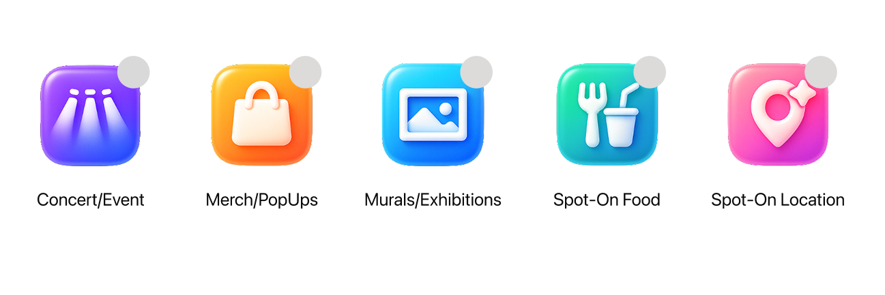
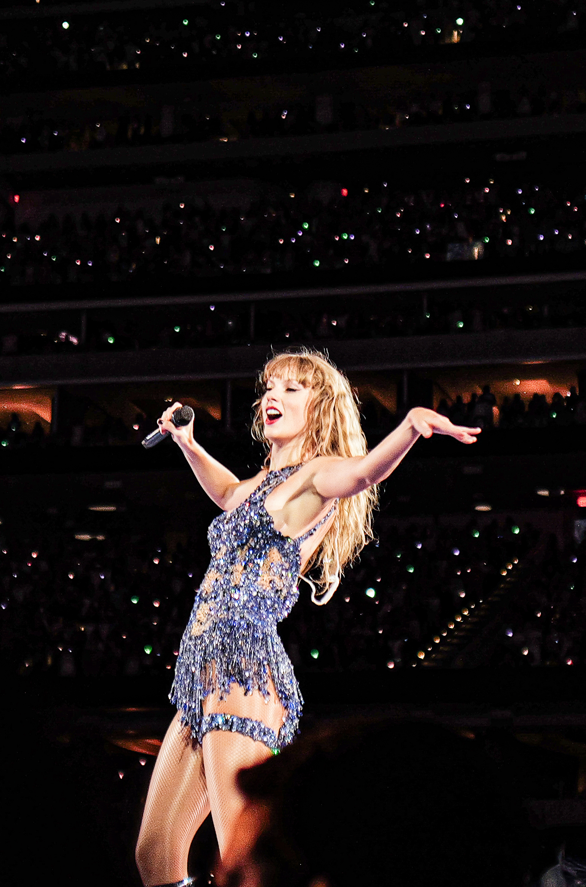
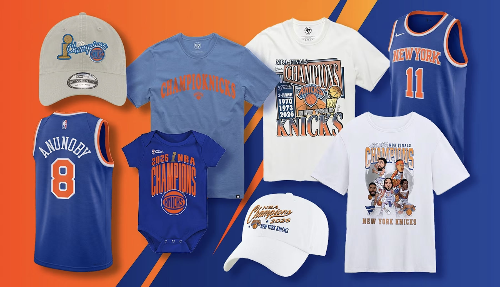
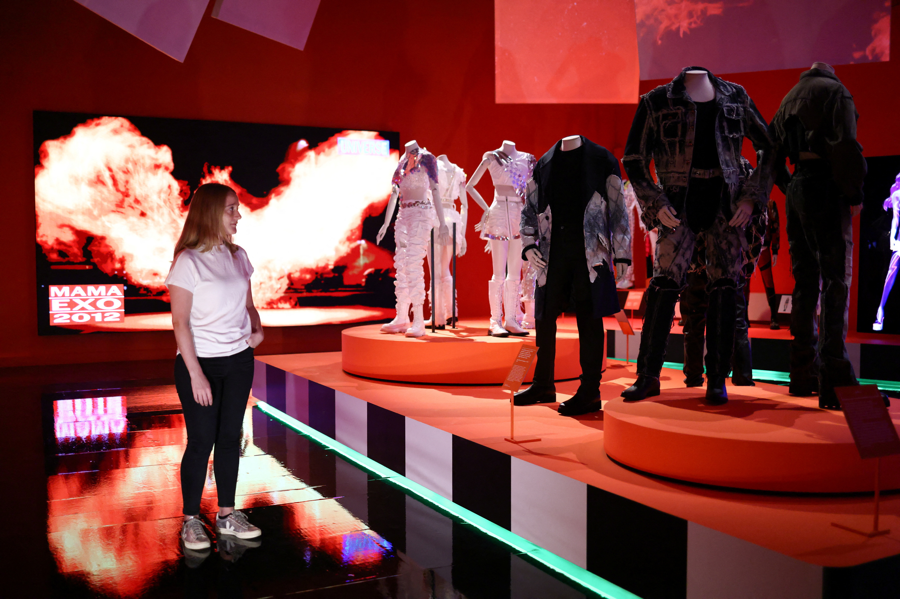
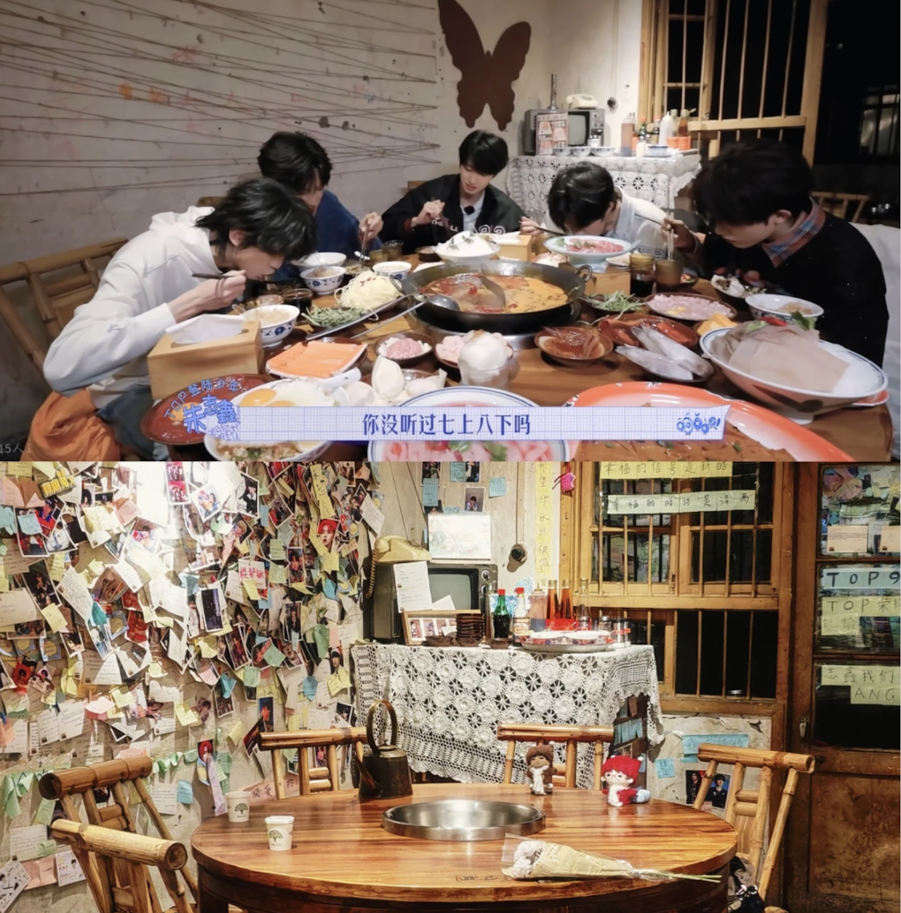
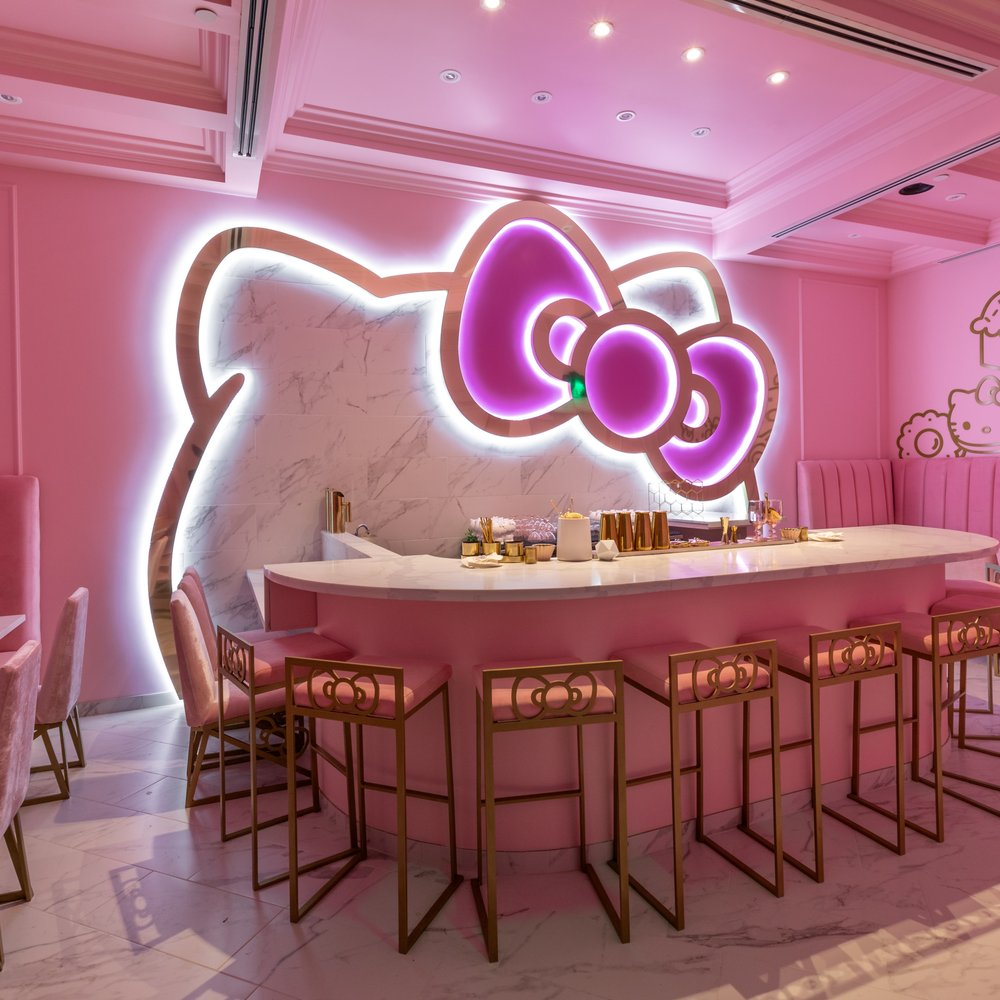

Overview
Fanscape is a map-based discovery system that translates fandom behavior into spatial experience. Instead of treating mapping as neutral documentation, the project uses maps as a medium to organize collective admiration — routes, reenactments, fan-made guidebooks, and public intimacy while preserving distance between subject, fan, and place.
Instead of asking users to directly socialize, Fanscape lets fandom intimacy emerge through shared routes, repeated visits, guidebooks, and spatial traces.
Workflow Challenge
Contemporary fandom largely exists inside digital platforms. Fans gather through posts, feeds, screenshots, comments, and algorithmic timelines, but these spaces rarely explain where fandom takes place in the real world.
The challenge was not simply to design another social app. The challenge was to build a workflow that could translate digital fandom signals into spatial behavior: where fans travel, what places they reenact, what routes they follow, what locations become meaningful, and how admiration becomes movement.
How can a map structure fandom intimacy without forcing direct social encounter?
Workflow
Research Inputs
01 — Competitive Analysis
Weverse, Weibo, Xiaohongshu, TikTok fan guidesAnalyzed how fans investigate others and connect platform activity with real-world places.
- Fandom communities are mostly virtual with no equivalent spatial layer
- No clear platform supports fandom real-space exploration
- Algorithms amplify fandom emotions but rarely preserve spatial memory
- The link between community platforms and real-world movement is weakly articulated
02 — Semi-Structured Interviews
6 participants — K-pop, C-pop, Western fandomsShared how they search, plan, and navigate fandom experiences in the real world.
- Fandom journeys are strongly spatial but poorly documented
- Fans travel internationally for concerts, filming sites, exhibitions, restaurants, birthday screens
- No platform helps track a global fandom footprint
- Fans mainly care about their own fandom, not a generalized network
- Fans want to see where others have pinned and what their experience was like
03 — Follow-Up Interviews
3 participants — K-pop, Marvel, Broadway fandomsDescribed what they would look for in memorable fandom-specific locations.
- Fans want reliable ways to verify real-world fandom spots worldwide
- Location information is buried in posts, screenshots, and fan blogs
- Information disappears quickly and becomes hard to verify
- Users need clarity, structure, and filtering
- Overloaded maps overwhelm — lenses provide simple mental models for location types
From Emotion to Movement
Early in the project, I explored whether collective fandom emotion could be visualized directly on a map — testing flows where users submitted emotional states, compared fandom sentiment, and saw collective data across cities. User testing revealed that emotion alone could not create a meaningful spatial system.


Workflow System
Lenses as Conceptual Filters, Not Features
The lens system transforms the map from a neutral surface into a selective framework. Each lens highlights a specific type of fandom behavior through repeated actions rather than emotional expression.


Reveals synchronized gathering. Intimacy here is temporal and collective. Fans briefly converge, then disperse. The map captures the before, during, and after of mass fandom movement.

Captures ritualized consumption and pilgrimage. These sites function as material anchors of fandom identity, where proximity is mediated through objects rather than people.

Marks fandom's inscription into the city's visual fabric. Intimacy becomes symbolic and public — visible even to those outside the fandom.

Traces everyday imitation. Eating the same food transforms admiration into embodied routine, collapsing distance through repetition rather than encounter.

Identifies exact sites of reenactment — photo angles, sidewalks, filming locations. Intimacy is precise but anonymous: fans overlap in space without needing to meet.

The smallest unit of admiration-driven geography. A routine stop, a café, a drink — where distance collapses through repetition at the most casual scale.
Mapping as a Mediating Surface
Structuring intimacy without encounter
As the map evolved from an interface into a medium, I extended the system beyond individual pins into relational and temporal structures. Rather than encouraging direct social contact, these layers regulate how closeness is perceived, followed, and replayed.
The Fandom Guidebook translates individual pins into curated routes, shifting fandom from isolated moments to sequential movement. Routes aggregate repeated visits into recognizable paths. Fans follow traces left by others, not people themselves.
The Friends page reframes social connection as spatial awareness rather than conversation. Friends appear through recent locations and routes. No chat-first interaction is required — presence is implied through movement.
The Profile page functions as a personal spatial archive. "My Fan Map" visualizes accumulated visits across cities. Posts are anchored to locations rather than timelines. Identity is constructed through where one has been, repeatedly.
Final Product System
A map-first interface where users explore fandom-related locations through pins, lenses, and city-level discovery.
Curated routes based on fandom-specific movement, helping users follow spatial traces without needing direct contact with other fans.
Cards that explain why a place matters culturally — fandom tag, location type, images, description, and user posts.
A spatial reference layer where friends appear through recent locations, routes, and fandom traces rather than chat-based interaction.
A personal archive that visualizes where the user has participated in fandom across places and cities.
A way for users to preserve and share fandom journeys as spatial memory — a record of where admiration has taken them.
What This Proves
Fanscape demonstrates my ability to turn cultural behavior into a structured workflow. The project shows how I take messy community signals, research interviews, platform observations, emotional patterns, and spatial behaviors — then translate them into product logic, information architecture, and interface systems.
It connects directly to my event-based work. My offline event projects organize fandom through physical gatherings; Fanscape organizes fandom as a digital spatial infrastructure.
Research Workflow
Platform analysis + semi-structured interviews + user testing across 3 prototype iterations
System Workflow
Emotion-to-movement pivot + 6 conceptual lenses + spatial behavior categories
Product Workflow
Map interface + guidebook + friends as spatial reference + profile as movement archive
Reflection
The biggest design change was moving away from mapping emotion directly and toward mapping the repeated actions through which admiration becomes visible. Rather than asking users to declare feelings, Fanscape tracks where fandom is practiced: where people go, what they reenact, what they save, and which traces they follow.
Fanscape became a bridge between my event-based work and my product design practice. It shows how culture-driven participation can exist both offline and online, and how a map can become a medium for organizing collective admiration without collapsing the distance that makes fandom feel safe.